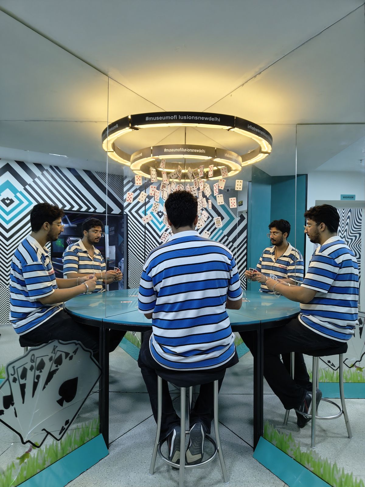
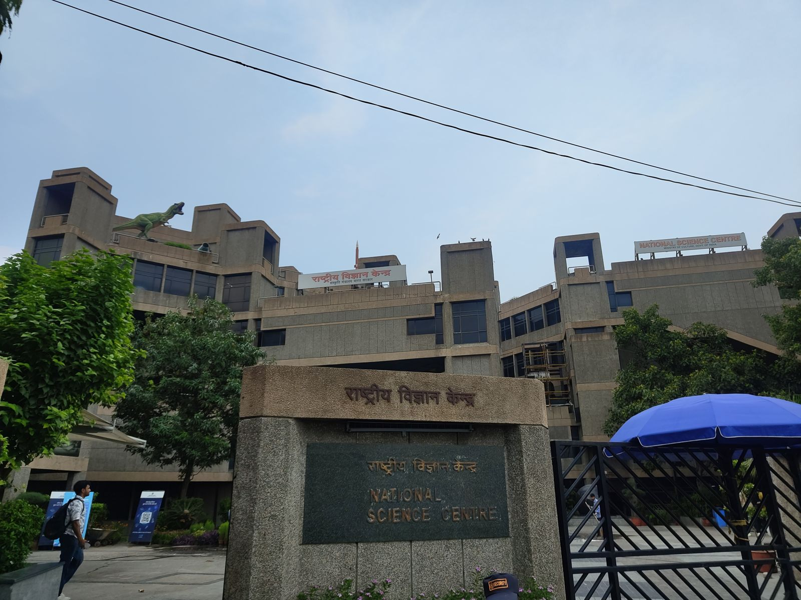
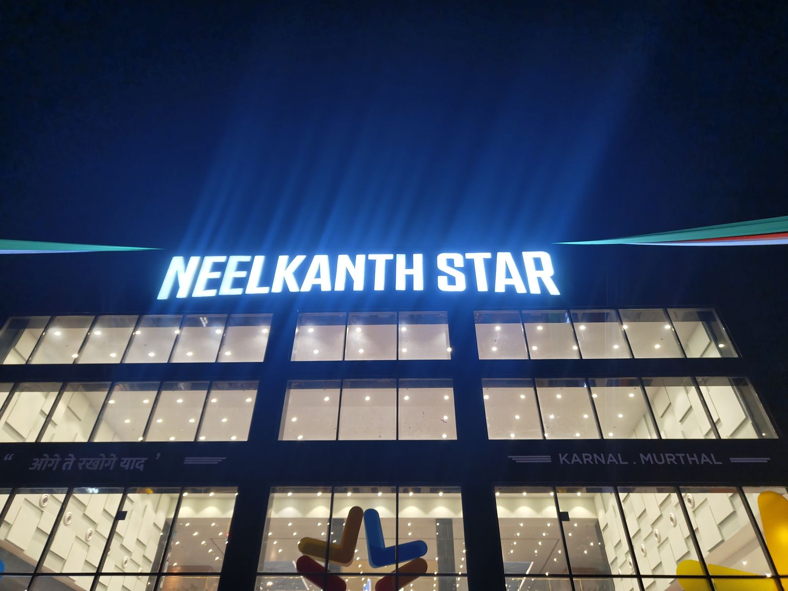
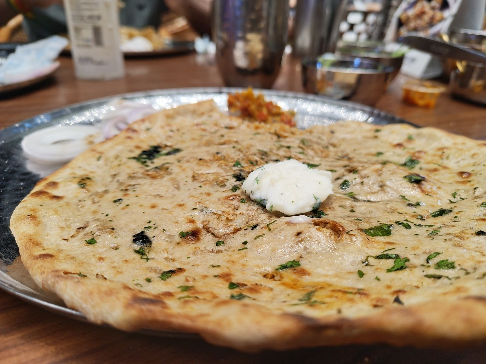
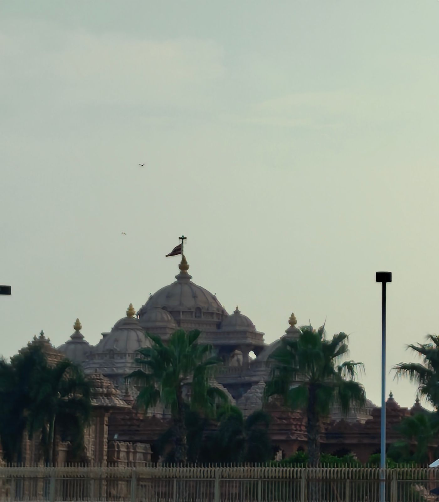
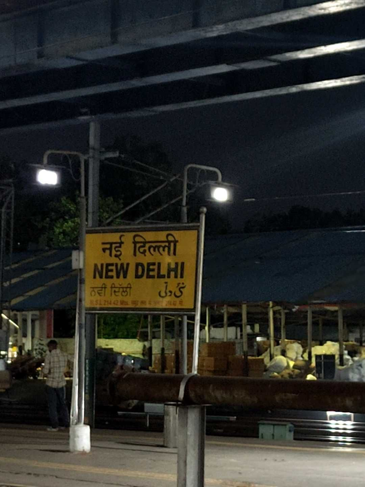

10 to 16 August 2026Museums, a paratha, and a building I will not call a temple
PUBLISHED 28 AUGUST 2026
Monday. My manager does not approve leave on Mondays and I understand why, because Monday is when the reports go to stakeholders and the weekly decks get built. So I woke at twelve, logged in by one, and the day went past me.
You will see this pattern a lot on Mondays. It is what it is.
The foot
I woke up on Tuesday and the blister on my right little toe was not in any condition to go into a shoe.
So my sister and my bua went shopping and I stayed in. I ended up helping my team through some things even though it was my day off, which tells you something about either my work ethic or my inability to sit still, and I am not sure which.
Wednesday was the same. I gave the foot another day and slept through most of it, while my sister continued her methodical destruction of my Netflix recommendations with an ungodly volume of K-drama.
That evening the cousins came back and the younger one said he had taken Thursday, Friday and Saturday off. So we made plans. Vague ones, but plans.
Thursday
Awake at nine, tickets booked for the Museum of Illusions, in a cab by ten, in CP by ten past eleven, and inside by quarter past.

It is a nice place. I got some good photographs out of it. But it is six hundred rupees and we were finished in under an hour, and that is the whole review.
Then I think it was me who suggested the National Science Centre. What is it with me and museums.

Four hundred rupees, and it is the better one by a distance. More to see, more to do, and the shows are good. There were several of them and we sat through more than one.
Here is the thing I enjoyed more than I should have. At one of the shows they described a tube glowing red-orange and asked the room which gas it was. I said neon. Nobody else had it. A physics degree does not come up often, and when it does you take the moment.
The comparison writes itself. A lot of what the Museum of Illusions charges six hundred for is already sitting inside the four hundred rupee science centre, alongside far more besides. Go to the second one.
Farzi
By then we badly needed to eat. I texted Hadesh and asked him to suggest somewhere in CP or Hauz Khas, and he came back with a list of what were, I am fairly confident, good restaurants.
Then I went to Farzi Cafe instead.
You already know how that went. The review is here.
Bowling, again
We had time before dark, so we thought we would go bowling.
The nearest place was out in Dwarka at Vegas Mall, so we went to Dwarka. No slots.
That is twice in one week, at two different malls, in two different parts of Delhi. I am starting to think bowling and I are not meant for each other.
More window shopping. Ice cream. Then home.
On the way we crossed Nawada, and crossing it brought back things I had not thought about in a while, and somewhere in the spiral of that I texted someone I should not have texted.
Well. It is what it is.
Home by half eight. Skipped dinner. Played some ludo, which I won, and went to bed.
Friday
My bua said we should not waste the trip and should go somewhere, since it was our second last day.
We were both too tired and my feet were in no condition for shoes, so we did not. We rested all day, and then in the evening we drove out to Murthal for dinner.

I have heard about Murthal and its parathas my entire life and I have never once understood the fuss. It is a stretch of highway with dhabas on it. People drive out of Delhi to eat bread. That was genuinely my position on the matter until this Friday.

Then I ate the gobhi paratha at Neelkanth and something clicked. Best one I have had in a long time, and I am no longer asking why people drive out of Delhi to eat bread.
Baskin Robbins afterwards, then waffles from Belgian Waffles, because apparently we were not going to make a decision about dessert.
On the drive back we planned the last day. Everyone except my older cousin was going to Akshardham. I had heard about it for years and never been, and I was looking forward to it.
Saturday
We got home late and then played uno, which I also won, so we woke at eleven.
Breakfast, then talking, then gossiping, and then it was three o'clock and we had decided to be at Akshardham by four.
We got there at ten past.
My bua and my sister waited at the entrance while my cousin and I went to deposit the phones and everything else. That took a very long time. Here is the one useful tip I have: take your own car. You can leave everything in it and skip forty minutes of queue and crowd on the way in, and another twenty on the way out.

Then you go inside, and the first thing you think is that it is beautiful. It is a genuinely well-built structure and it is mesmerising, and I am not going to do better than those two words.
No phones, no cameras.
I am not going to call the main building a temple. It is not one in a traditional sense. I am not going to explain that any further on my own website. If you want to argue about it, my email is on the about page.
The food court was horrible and overpriced.
The night show starts at 7:25 and it was the actual reason we came, and the reason we turned up late in the afternoon rather than in the morning. We waited, bought popcorn, and it started.
One word. Wow.
I am still salty that I could not photograph any of it. But it is what it is, and I have now said that twice in one note, which I suspect is what a fortnight in Delhi does to a person.
Home, dinner, more talking, some ludo which I won, and bed.
Sunday
I had packed the night before, so all I had to do was be awake. The train was at ten to six in the morning.
Goodbyes to my cousins and my bua, then a cab, and we were at the station twenty-five minutes early. Boarded, and I will say it one more time: the Vande Bharat is the best way to travel anywhere in this country.
The thing I had not accounted for was Navratri.
We got off at Amb, twenty kilometres from my house. Navratri was on at Chintpurni, which means every road within reach of that temple stops working. My dad had sent the driver ahead and we took a shortcut to skip the worst of it.
It still took the better part of two hours to cover twenty kilometres.
We got home wrecked. I had a bath, went straight to bed, and slept like a baby.
Delhi
Almost everyone I would drive four hundred kilometres for is or was in Delhi. My bua. Gaurav, out in Gurgaon. And the one who used to be. And Delhi is still the last place I want to go, and I have never worked that out.
I told Gaurav I was coming and we made a plan for the weekend. He rang me while I was on the train to say he was heading home, and that he would be back next week instead. The following Sunday he rang again, from Delhi, to ask whether I was still there. I was in the hills by then. Twice in ten days, and that fucker did not have to try once.
I have started to think visits work like this. The ones that are going to happen, happen. The ones that are not were never going to, however many plans you stack on top of them. Gaurav was fifty minutes from where I was sleeping and we still missed each other twice. There are other visits I planned for years and never made at all.
Some days I think that is just a story I tell myself so I do not have to admit I sat still when I could have moved. However most days I think if it is meant to be, it will be.
My bua asked us to visit for years and every single time we said soon. Then we rang her doorbell with no warning and she had no idea we were coming. That was the best thing that happened in two weeks and it took no planning whatsoever.
